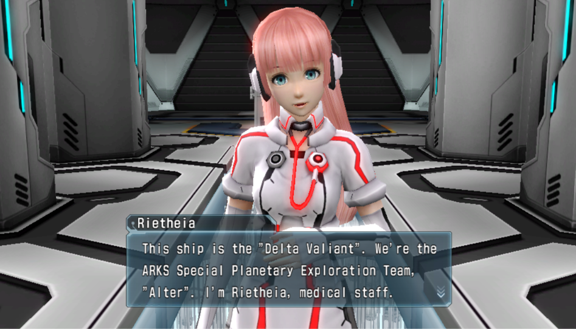
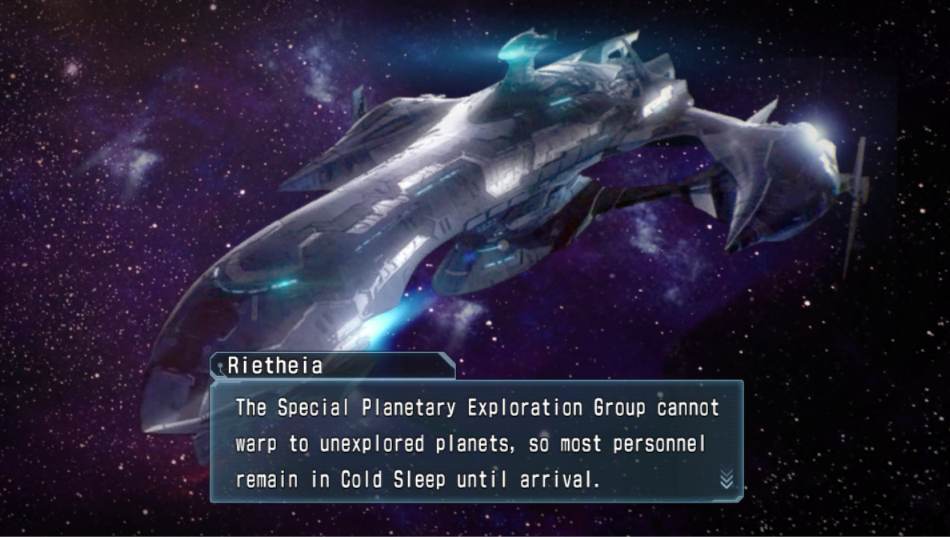
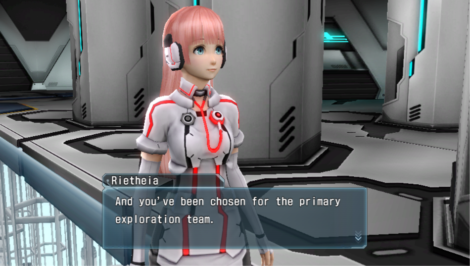
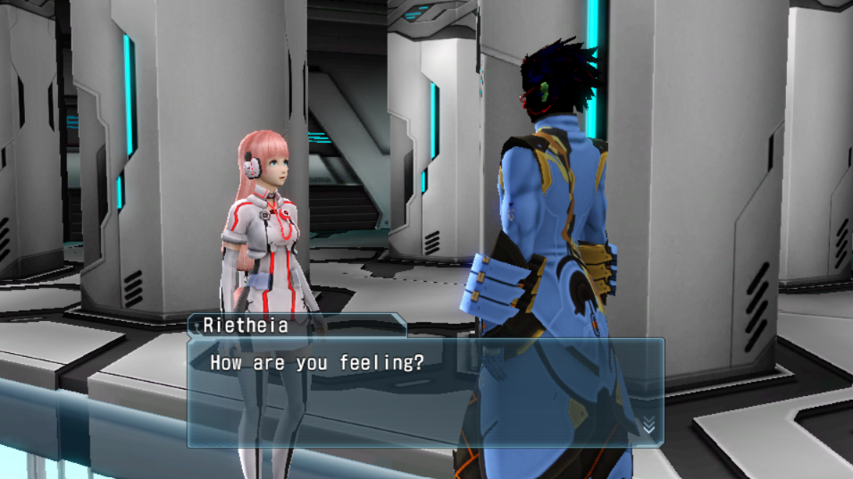

What the 100% figure means
This percentage refers specifically and exclusively to the audited enabled runtime translation corpus.
PlayStation Vita · PCSG00351 · Vita3K · v1.05 tested
An independent AI-assisted completion of the public Phantasy Star Nova English patch. The known audited runtime text corpus is translated, compiled and running in English.

Completion status
24,850 / 24,850 audited enabled runtime records translated.
This percentage refers specifically and exclusively to the audited enabled runtime translation corpus.
These are separate completion dimensions. A project can have a 100% complete audited translation corpus while full human playthrough QA is not yet complete, without contradiction.
Public release
This site does not host the commercial game, PKG, license, eboot or a prebuilt 3.25 GB game container. The public package contains the completed English corpus, tooling, validation records and reproducible builder.
Everything needed to compile the completed English RMD layer and create the verified Vita3K full-merge CPK locally.
Download builder v1.09c4fcf48514d1b1136f377d545454aa23fd024cdff9af0adda54e7bfd5b077eaBrowse the corpus, manifests, build scripts, screenshots, known issues and release history.
Open GitHub Latest release ↗Runtime proof
The release was booted and played in Vita3K. Story dialogue, UI and text rendering were confirmed in live gameplay, including after activating the game’s v1.05 update.


A full start-to-finish human playthrough is not claimed. Corpus completeness and runtime execution are documented separately.
Gameplay evidence
This public recording shows the released full-game rough translation in actual gameplay. Dialogue, UI and story scenes are visibly running in English.
Watch on YouTube ↗Release state
Translation corpus: 100% complete. Full human playthrough QA: not yet complete.
Local builder
The builder takes your clean main CPK plus the public Arks-Layer partial patch as technical input, compiles the completed corpus and produces the verified Vita3K replacement CPK.
python .\tools\build_complete_vita3k.py `
--app "C:\path\to\NOVA_FileList_Vita.cpk" `
--public-patch "C:\path\to\ArksLayerPatch.zip" `
--output ".\NOVA_FileList_Vita_FULL_ENGLISH.cpk"Install target: ux0/app/PCSG00351/NOVA_FileList_Vita.cpk. Keep the original Vita3K-compatible eboot.bin and other installed game files unchanged.
Technical verification
3,252,228,483 bytesebf2cea4c8158f32557d52c58b111101c1818157d862cd7b1c570b096730e4ba3bddc5e284fa616259ec2502d98e1a5c5f785f87743917f9bb6e74b9c8390e4ef478608ee70a5579252fbcffdae8268e49396be8925dd0183d3383d3b909758aKnown issue
On the tested Vita3K configuration, a CAST player can render with black or glitched body materials. Turning Disable Surface Sync OFF restored the clothing, while the CAST body could remain black. NPCs, environments, UI and English text continued to render correctly.

Use a non-CAST character for clean capture footage if your Vita3K setup shows this renderer issue.
Related Vita3K issue ↗Provenance
This independent completion retains existing work from the public Arks-Layer / PSNovaTranslations corpus and completes the previously uncovered text layer with machine translation / LLM assistance.
It is not an official Sega or tri-Ace release and is not endorsed by Arks-Layer. The upstream repository asks contributors not to submit AI-generated translations; this release is therefore presented as an independent build, not an upstream pull request.